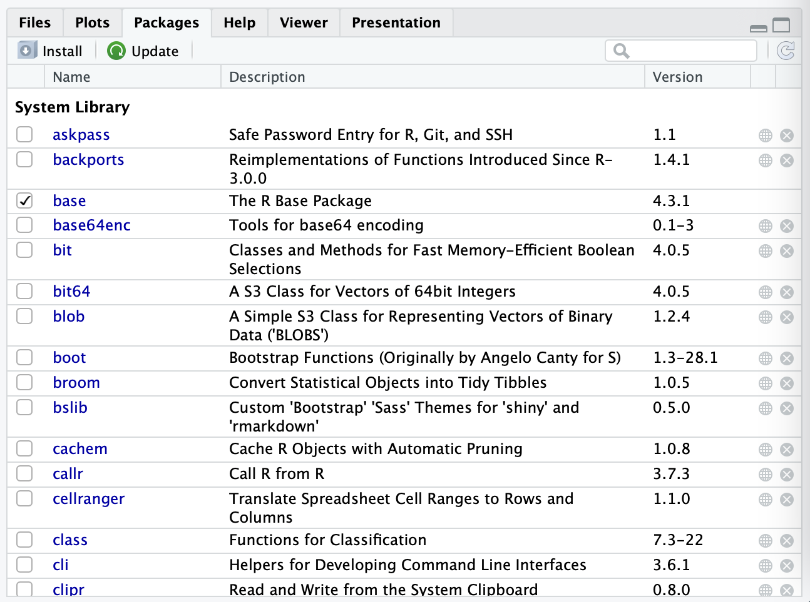
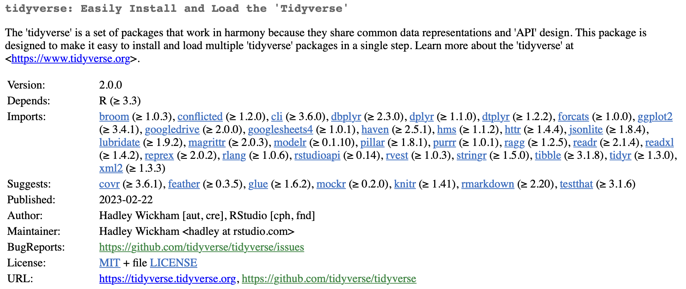
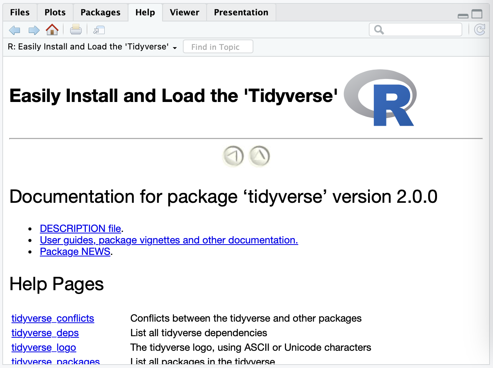
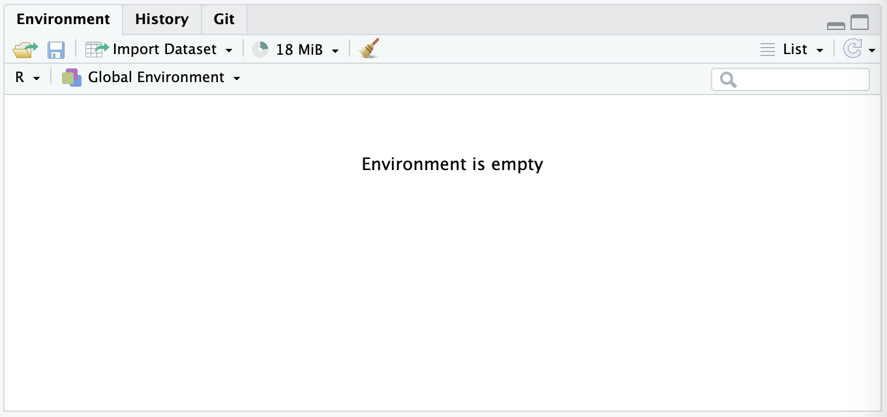
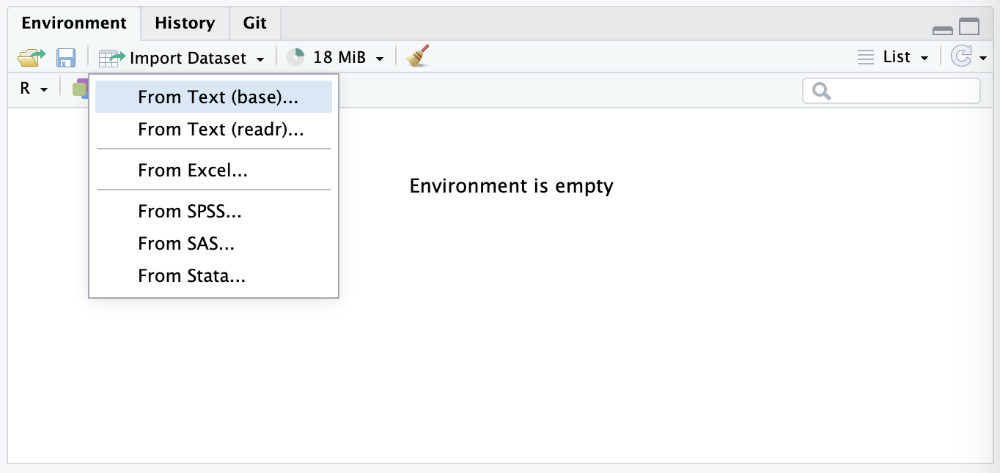
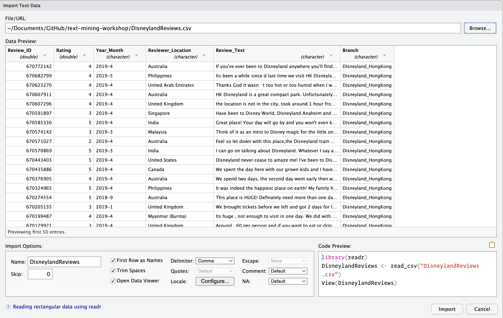
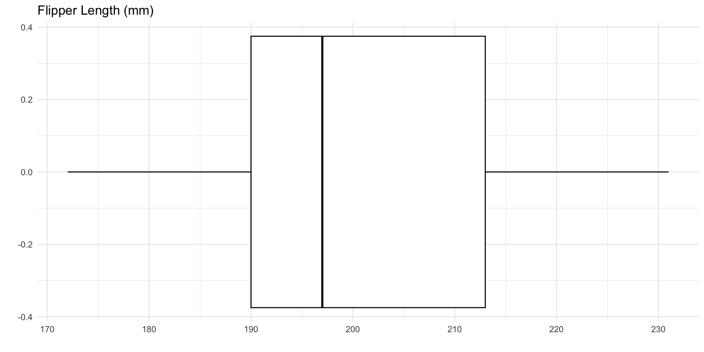
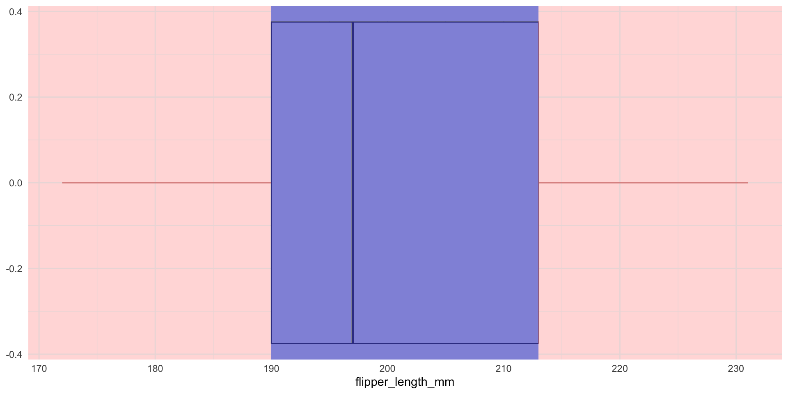

Why R
R vs. Python
Why RStudio/Posit?
- RStudio became Posit in July 2022
- No need for attendees to install anything
- Everything in one place
- Multiple language support
R vs. RStudio
- R is the language and needs to be installed before you can use RStudio
- Can be downloaded from CRAN (Comprehensive R Archive Network) (link)
RStudio IDE
RStudio is an integrated development environment (IDE) for R and Python. It includes a console, syntax-highlighting editor that supports direct code execution, and tools for plotting, history, debugging, and workspace management. RStudio is available in open source and commercial editions and runs on the desktop (Windows, Mac, and Linux).
Posit Cloud
Tip
Everything in this workshop can be done through the virtual project. Scan the QR code or visit the URL to get started.
Packages
Packages

What are packages?
- Libraries of code
- Expand the “base R” code
- For almost anything you need
- Beware of relying too heavily on niche packages
Example packages
| Package | Description |
|---|---|
DBI |
Connect to databases |
googlesheets |
Access data in Google Sheets |
janitor |
Clean up data |
openxlsx |
Read, write, and edit .xlsx files |
shiny |
Interactive widgets |
Installing and using packages
Installing packages only needs to be done once.
Packages need to be loaded either at the start of your session, or as you use them.
CRAN

Package Help
?function-name

The tidyverse

The tidyverse is an opinionated collection of R packages designed for data science. All packages share an underlying design philosophy, grammar, and data structures.
The tidyverse benefits
- Easier to understand for new users
- Packages all work together
- Covers most frequent use cases
- Can “pipe” instructions together
Community

tidyverse packages

dplyr functions
mutate()create variables (columns)select()subset variablesfilter()subset observations (rows) based on criteriasummarise()reduces multiple observations down to a single summaryarrange()change the ordering of observations
dplyr vs ‘base R’
Reading data into R

Reading data into R

Reading data into R

Intro to dplyr
Open the file
Open 03-intro-to-r/01-intro.R in RStudio

Running the code
To run the code for this workshop, simply click on the row with your code, or select it, and press Ctrl/⌘ + Enter.
Examine the data
Note
Code begins in the section labeled Setup
Examine the data
Note
Code begins in the section labeled Examine the Data
# A tibble: 6 × 8
species island bill_length_mm bill_depth_mm flipper_length_mm body_mass_g
<fct> <fct> <dbl> <dbl> <int> <int>
1 Adelie Torgersen 39.1 18.7 181 3750
2 Adelie Torgersen 39.5 17.4 186 3800
3 Adelie Torgersen 40.3 18 195 3250
4 Adelie Torgersen NA NA NA NA
5 Adelie Torgersen 36.7 19.3 193 3450
6 Adelie Torgersen 39.3 20.6 190 3650
# ℹ 2 more variables: sex <fct>, year <int>Column names
Sometimes it is nice to remind yourself of the names of your columns, or to be able to refer to them by their position.
[1] "species" "island" "bill_length_mm"
[4] "bill_depth_mm" "flipper_length_mm" "body_mass_g"
[7] "sex" "year" Examining the data with dplyr
dplyr also offers a function to view the data that is a little easier to use in the console.
Rows: 344
Columns: 8
$ species <fct> Adelie, Adelie, Adelie, Adelie, Adelie, Adelie, Adel…
$ island <fct> Torgersen, Torgersen, Torgersen, Torgersen, Torgerse…
$ bill_length_mm <dbl> 39.1, 39.5, 40.3, NA, 36.7, 39.3, 38.9, 39.2, 34.1, …
$ bill_depth_mm <dbl> 18.7, 17.4, 18.0, NA, 19.3, 20.6, 17.8, 19.6, 18.1, …
$ flipper_length_mm <int> 181, 186, 195, NA, 193, 190, 181, 195, 193, 190, 186…
$ body_mass_g <int> 3750, 3800, 3250, NA, 3450, 3650, 3625, 4675, 3475, …
$ sex <fct> male, female, female, NA, female, male, female, male…
$ year <int> 2007, 2007, 2007, 2007, 2007, 2007, 2007, 2007, 2007…Other ways to view the data
stris a base-R method, similar toglimpseviewwill open the data in a new tab, similar to Excel
tibble [344 × 8] (S3: tbl_df/tbl/data.frame)
$ species : Factor w/ 3 levels "Adelie","Chinstrap",..: 1 1 1 1 1 1 1 1 1 1 ...
$ island : Factor w/ 3 levels "Biscoe","Dream",..: 3 3 3 3 3 3 3 3 3 3 ...
$ bill_length_mm : num [1:344] 39.1 39.5 40.3 NA 36.7 39.3 38.9 39.2 34.1 42 ...
$ bill_depth_mm : num [1:344] 18.7 17.4 18 NA 19.3 20.6 17.8 19.6 18.1 20.2 ...
$ flipper_length_mm: int [1:344] 181 186 195 NA 193 190 181 195 193 190 ...
$ body_mass_g : int [1:344] 3750 3800 3250 NA 3450 3650 3625 4675 3475 4250 ...
$ sex : Factor w/ 2 levels "female","male": 2 1 1 NA 1 2 1 2 NA NA ...
$ year : int [1:344] 2007 2007 2007 2007 2007 2007 2007 2007 2007 2007 ...Other ways to view the data
What species are in the data?
To specify a column in the data, simply insert a $ after the name of the data (i.e. data$column).
[1] Adelie Gentoo Chinstrap
Levels: Adelie Chinstrap GentooHow many are male?
Note
Code begins in the section labeled Intro to dplyr
# A tibble: 168 × 8
species island bill_length_mm bill_depth_mm flipper_length_mm body_mass_g
<fct> <fct> <dbl> <dbl> <int> <int>
1 Adelie Torgersen 39.1 18.7 181 3750
2 Adelie Torgersen 39.3 20.6 190 3650
3 Adelie Torgersen 39.2 19.6 195 4675
4 Adelie Torgersen 38.6 21.2 191 3800
5 Adelie Torgersen 34.6 21.1 198 4400
6 Adelie Torgersen 42.5 20.7 197 4500
7 Adelie Torgersen 46 21.5 194 4200
8 Adelie Biscoe 37.7 18.7 180 3600
9 Adelie Biscoe 38.2 18.1 185 3950
10 Adelie Biscoe 38.8 17.2 180 3800
# ℹ 158 more rows
# ℹ 2 more variables: sex <fct>, year <int>How many are male on Biscoe island?
# A tibble: 0 × 8
# ℹ 8 variables: species <fct>, island <fct>, bill_length_mm <dbl>,
# bill_depth_mm <dbl>, flipper_length_mm <int>, body_mass_g <int>, sex <fct>,
# year <int>How many are male on Biscoe island?
R is case sensitive
When in doubt, check spelling and punctuation
- 1
- In this case, we didn’t originally capitalize the “B” in Biscoe.
# A tibble: 83 × 8
species island bill_length_mm bill_depth_mm flipper_length_mm body_mass_g
<fct> <fct> <dbl> <dbl> <int> <int>
1 Adelie Biscoe 37.7 18.7 180 3600
2 Adelie Biscoe 38.2 18.1 185 3950
3 Adelie Biscoe 38.8 17.2 180 3800
4 Adelie Biscoe 40.6 18.6 183 3550
5 Adelie Biscoe 40.5 18.9 180 3950
6 Adelie Biscoe 40.1 18.9 188 4300
7 Adelie Biscoe 42 19.5 200 4050
8 Adelie Biscoe 41.4 18.6 191 3700
9 Adelie Biscoe 40.6 18.8 193 3800
10 Adelie Biscoe 37.6 19.1 194 3750
# ℹ 73 more rows
# ℹ 2 more variables: sex <fct>, year <int>Piping functions
- %>% is the traditional method that came from the `magrittr` package
- |> the “native” pipe that was introduced to R in version 4.1
- Both work by ‘piping’ information from the left hand side (LHS) to the right hand side (RHS)

Piping functions
# A tibble: 6 × 8
species island bill_length_mm bill_depth_mm flipper_length_mm body_mass_g
<fct> <fct> <dbl> <dbl> <int> <int>
1 Adelie Biscoe 37.9 18.6 172 3150
2 Adelie Biscoe 37.8 18.3 174 3400
3 Adelie Torgersen 40.2 17 176 3450
4 Adelie Dream 39.5 16.7 178 3250
5 Adelie Dream 33.1 16.1 178 2900
6 Chinstrap Dream 46.1 18.2 178 3250
# ℹ 2 more variables: sex <fct>, year <int>Other ways to filter
- Using Boolean operators
Other ways to filter
- By missing values
# Flipper length is missing/blank
penguins |>
filter(is.na(flipper_length_mm))
# Flipper length is NOT missing/blank
penguins |>
filter(!is.na(flipper_length_mm))- 1
-
!means “not”
Making new variables
Making new variables
Now let’s make a new variable based on flipper length that groups them into buckets of “short”, “average”, and “long”.
Making new variables
We’ll use the following as our cutoffs:
| Description | Length (mm) |
|---|---|
| short | less than 190 |
| average | between 190 and 213 |
| long | more than 213 |
Making new variables
# A tibble: 6 × 2
flipper_length_mm flipper_length
<int> <chr>
1 181 short
2 186 short
3 195 average
4 NA <NA>
5 193 average
6 190 average Summarize the data
Summarize the data
Summarize the data
- 1
-
By default,
summariseincludes all records, regardless of whether they have a value or not. We need to explicitly tell R to exclude them.
# A tibble: 3 × 2
species avg_flipper_length
<fct> <dbl>
1 Adelie 190.
2 Chinstrap 196.
3 Gentoo 217.Examining Disney Reviews
The Data
42,6561 reviews from Disney California, Hong Kong, and Paris

Source: Kaggle
Read the data
Open 03-intro-to-r/02-our-data.R in RStudio if you’d like to follow along.
str
Look at the structure of the data using base R.
spc_tbl_ [1,000 × 6] (S3: spec_tbl_df/tbl_df/tbl/data.frame)
$ Review_ID : num [1:1000] 3.06e+08 6.66e+08 2.93e+08 3.35e+08 3.94e+08 ...
$ Rating : num [1:1000] 5 3 3 1 3 5 5 5 5 5 ...
$ Year_Month : Date[1:1000], format: "2015-08-01" "2018-10-01" ...
$ Reviewer_Location: chr [1:1000] "Portugal" "United States" "United States" "United Kingdom" ...
$ Review_Text : chr [1:1000] "I ve previously been to 3 Disney Resorts. So I had my expectations sky high for the original park. And they we"| __truncated__ "The Hong Kong Disneyland is quite small, there are too many people and the waiting line is long. it took averag"| __truncated__ "My wife, my 15 year old son, and I went to Disneyland Park on June 30, 2015; a hot, sunny, 95 degree day.We kne"| __truncated__ "Our family had the unfortunate experience of being in Paris on the weekend of 13th 16th November during the t"| __truncated__ ...
$ Branch : chr [1:1000] "Disneyland_California" "Disneyland_HongKong" "Disneyland_Paris" "Disneyland_Paris" ...
- attr(*, "spec")=
.. cols(
.. Review_ID = col_double(),
.. Rating = col_double(),
.. Year_Month = col_character(),
.. Reviewer_Location = col_character(),
.. Review_Text = col_character(),
.. Branch = col_character()
.. )
- attr(*, "problems")=<externalptr> glimpse
glimpse is a function from dplyr that allows for a different way to view your data.
Rows: 1,000
Columns: 6
$ Review_ID <dbl> 305683957, 666364898, 293082325, 334650140, 39355304…
$ Rating <dbl> 5, 3, 3, 1, 3, 5, 5, 5, 5, 5, 5, 3, 3, 5, 4, 3, 5, 4…
$ Year_Month <date> 2015-08-01, 2018-10-01, 2015-06-01, 2015-11-01, 201…
$ Reviewer_Location <chr> "Portugal", "United States", "United States", "Unite…
$ Review_Text <chr> "I ve previously been to 3 Disney Resorts. So I had…
$ Branch <chr> "Disneyland_California", "Disneyland_HongKong", "Dis…head
head returns the first n-rows (defaults to 6).
# A tibble: 6 × 6
Review_ID Rating Year_Month Reviewer_Location Review_Text Branch
<dbl> <dbl> <date> <chr> <chr> <chr>
1 305683957 5 2015-08-01 Portugal I ve previously been to… Disne…
2 666364898 3 2018-10-01 United States The Hong Kong Disneyland… Disne…
3 293082325 3 2015-06-01 United States My wife, my 15 year old … Disne…
4 334650140 1 2015-11-01 United Kingdom Our family had the unfor… Disne…
5 393553042 3 2016-07-01 United States HK Disney is very small … Disne…
6 175685909 5 2013-08-01 United Kingdom Nothing but fun fun fun!… Disne…tail
tail returns the last n-rows (defaults to 6).
# A tibble: 6 × 6
Review_ID Rating Year_Month Reviewer_Location Review_Text Branch
<dbl> <dbl> <date> <chr> <chr> <chr>
1 132494563 4 2012-02-01 Canada Our kids had a blast at … Disne…
2 467174166 5 2017-03-01 United States Was good to see the Euro… Disne…
3 665419841 5 2019-03-01 Singapore this is a wonderful plac… Disne…
4 654308388 4 2019-02-01 Canada Took my family and grand… Disne…
5 330107371 5 2015-11-01 Australia An amazing experience fo… Disne…
6 446917318 5 2016-12-01 United Kingdom Been here just before ch… Disne…Where are reviewers from?
[1] "Portugal" "United States" "United Kingdom"
[4] "India" "Australia" "Austria"
[7] "New Zealand" "Canada" "Guam"
[10] "Thailand" "Saudi Arabia" "Singapore"
[13] "Switzerland" "Indonesia" "Egypt"
[16] "South Africa" "Hong Kong" "Philippines"
[19] "Israel" "Brazil" "Panama"
[22] "Malaysia" "Finland" "France"
[25] "Germany" "Mauritius" "Sweden"
[28] "Ireland" "Macau" "Cyprus"
[31] "Belgium" "Bulgaria" "United Arab Emirates"
[34] "China" "Malta" "Hungary"
[37] "Peru" "Lebanon" "Bahrain"
[40] "Nepal" "Vietnam" "Serbia"
[43] "Norway" "Netherlands" "Barbados"
[46] "Denmark" "Bangladesh" "Sri Lanka"
[49] "Argentina" "Brunei" "Greece"
[52] "Oman" "Spain" "Romania"
[55] "Japan" "Pakistan" Which parks have been reviewed?
The unique function lists only the different values in a string or column. It is particularly useful when looking at a limited list of options (action types, fundraiser names, etc.)
[1] "Disneyland_California" "Disneyland_HongKong" "Disneyland_Paris" Clean up Park Names
Here we use two dplyr functions: mutate and rename to remove Disneyland_ from the start of our values and choose a different column name.
[1] "California" "Hong Kong" "Paris" Look at our starting data set
Rows: 1,000
Columns: 6
$ Review_ID <dbl> 305683957, 666364898, 293082325, 334650140, 39355304…
$ Rating <dbl> 5, 3, 3, 1, 3, 5, 5, 5, 5, 5, 5, 3, 3, 5, 4, 3, 5, 4…
$ Year_Month <date> 2015-08-01, 2018-10-01, 2015-06-01, 2015-11-01, 201…
$ Reviewer_Location <chr> "Portugal", "United States", "United States", "Unite…
$ Review_Text <chr> "I ve previously been to 3 Disney Resorts. So I had…
$ Park <chr> "California", "Hong Kong", "Paris", "Paris", "Hong K…Questions so far?

Source: giphy